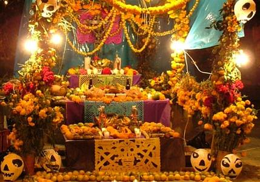

La creencia popular es que las almas de los seres queridos que se nos fueron regresan de ultratumba durante el Dia de Muertos.
Por tal motivo, se les recibe con una ofrenda donde se coloca su comida y bebida favorita, fruta, calaveritas de dulce y, si fuese el caso, juguetes para los niños.
No faltan las fotografias de los difuntos y las coloridas flores de cempasuchil.
Elementos de la ofrenda
Veladoras o cirios
Se utilizan las velas como símbolo del elemento fuego y por su asociación religiosa.
Imágenes de los difuntos
La ofrenda se coloca en anticipación a la visita de las almas de nuestros seres queridos ya difuntos, así es que se colocan sobre el altar los retratos de los mismos.
Flores
La flor de cempazúchil (tambien conocida como zempoaxochitl o cempasúchil), de color intenso anaranjado, es la más común en un altar de Muertos.
Incienso
Tradicionalmente no se utilizaba el incienso en sí sino el copal, una resina que, al quemarlo, arroja un humo muy aromático.
Papel picado
Se tratan de un papel delgado de colores conocido en México como papel de china
Pan de muerto
Casi siempre está presente el pan de muerto en alguna de sus formas.
Comida y bebida
En la ofrenda se acostumbra incluír platillos tradicionales mexicanos como son los tamales y el mole con pollo o pavo, los que se presentan en ollas y platos de barro cocido.
